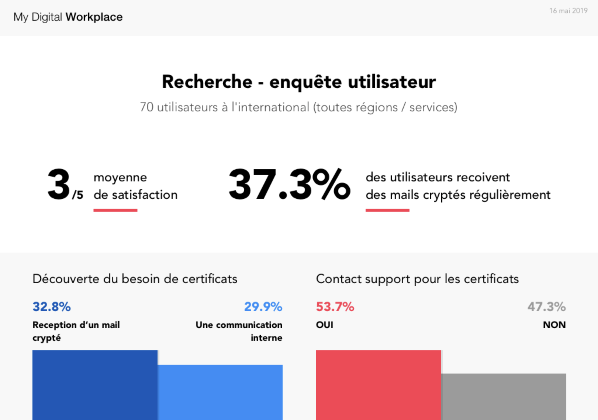

Digital Workplace
Client : Société Générale
Année : 2018 - 2020
Contexte
J'ai l'opportunité en 2018 de travailler comme Lead UX sur l'expérience utilisateur du Digital Workplace de la Société Générale.
Le support utilisateur représente la plus grande dépense et obtient le plus mauvais score NPS (Net Promoter Score) avec 82% de détracteurs en 2018. C'est sur cet aspect que la valeur business est définie, car nos utilisateurs sont "captifs". Ainsi, nos deux indicateurs clés sont le NPS et la réduction du nombre de tickets (et du coût) liés aux supports internationaux.
Le service fonctionne en mode "Agile à l'échelle" (modèle SAFe) composé de 4 "feature teams" de 6 personnes chacunes, 4 sponsors principaux (en lien avec la direction de la banque), un PM (Product Manager) et un Coach Agile.
En quelques chiffres :
- 4 feature teams
- Plus de 70 études : de la recherche initiale à l'implémentation.
- 3 régions couvertes : Asie, Europe et Amérique
- Une population de 170 000 utilisateurs
- 90 000 visites uniques mensuelles
Démarche : comprendre et définir
La difficulté principale du Digital Workplace d'un grand groupe est le manque de définition, il s'agit le plus souvent d'un concept que d'un produit.
La première étape de notre démarche fut donc de chercher à intégrer les attentes fortes du business avec les besoins et problématiques des collaborateurs.
Le risque principal étant la dégradation du service au profit de la réduction des coût, nous avons entamé une recherche basée sur des interviews, enquêtes, observations et ateliers avec près de 1500 collaborateurs (10% de la population globale du groupe).
Principaux sujets identifiés :
- "Je ne sais pas toujours comment contacter le bon support en fonction de mon problème." Il y a, en interne, plus de 20 supports distincts avec chacun leur spécialité. Les utilisateurs ne les connaissent pas et il est très difficile d'obtenir la bonne information rapidement.
- Difficulté de dialogue avec les support, souvent les réponses apportées ne sont pas les bonnes, le temps de traitement très long (jusqu'à 2/3 semaines, 1 semaine en moyenne) et les tickets fermés sans explications claires.
- Pas de capacité de voir ce qui m'appartient (matériel, applications, droits, etc.). Verbatim : "Pour une banque, le KYC (Know Your Customer) interne n'est pas très bon."
Co-créer et tester (très) rapidement
Des ateliers de co-création avec des utilisateurs clés (key users) sont créés pour aborder chacune des principales problématiques. Chaque série d'ateliers permet de générer un grand nombre d'idées priorisées et sous forme de prototype basse fidélité.

Le collaborateur est un client comme les autres
Pour adresser la complexité des sujets et la croissance rapide du projet, des outils et mesures sont mises en place pour afficher en toute transparence la performance du portail.
- Les parcours co-créés et les prochaines étapes du projet sont disponibles à l'ensemble des collaborateurs.
- Le score de satisfaction (global et par fonctionnalité) est disponible ainsi que les actions qui y sont associées.
- Un tableau de statistiques (taux d'erreur, conversion des parcours, ...) est disponible pour les sponsors, PM & PO.
- 20% des développements dédiés à l'amélioration continue des fonctionnalités via des tests utilisateurs.
Planifier les évolutions et prioriser les actions
Le Digital Workplace touche l'ensemble des métiers, des services du Groupe sur l'ensemble des pays où il se trouve. Il est rapide de se focaliser sur la sortie de nombreuses fonctionnalités sans stabiliser le produit et donc obtenir une expérience incohérente.
Au delà des tests utilisateurs sur les fonctionnalités existantes, chaque évolution passe par une phase de recherche, prototypage et tests avec les utilisateurs pour s'assurer que la valeur estimée correspond à la réalité.
Des ateliers réguliers avec les "key users" et sponsors sont organisés pour garder toutes les parties prenantes au même niveau, des retours critiques sur l'actuel ainsi que sur les prochaines actions envisagées.

Stabiliser la vision à moyen et long terme
Une fois les problématiques principales abordées, l'étape suivante fut de stabiliser la vision du Digital Workplace pour les itérations majeures à venir.
Découverte principale : les appels au support sont très majoritairement des sujets liés au PC, les applications, les mises à jours et les dysfonctionnements.
Proposition collective : créer une application directement sur la machine des utilisateurs pour amorcer un support pro-actif.
 Les collaborateurs n'appellent plus pour déclarer un problème avec leurs propres mots, les techniciens ont accès au diagnostic directement depuis le reporting de l'application sur le PC.
Les collaborateurs n'appellent plus pour déclarer un problème avec leurs propres mots, les techniciens ont accès au diagnostic directement depuis le reporting de l'application sur le PC.
La vision 2020 - 2021 sera entièrement basée sur un support proactif : détecter les erreurs directement sur le PC avant qu'elles n'entrainent un dysfonctionnement pour accompagner les collaborateurs dans la maintenance régulière de leur machine.
Résultats
Le Digital Workplace est en service depuis septembre 2018, les résultats sont les suivants :
- NPS : +60% promoters
- Réduction des tickets : -51% sur deux ans dont -31% entre janvier et aout 2019
- Visites : entre 80 et 100k par mois